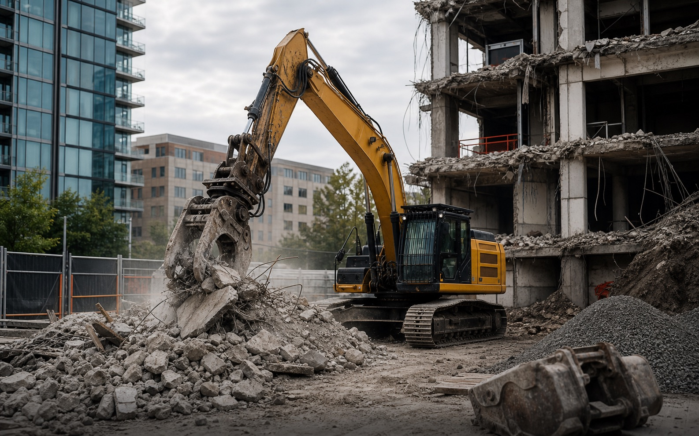
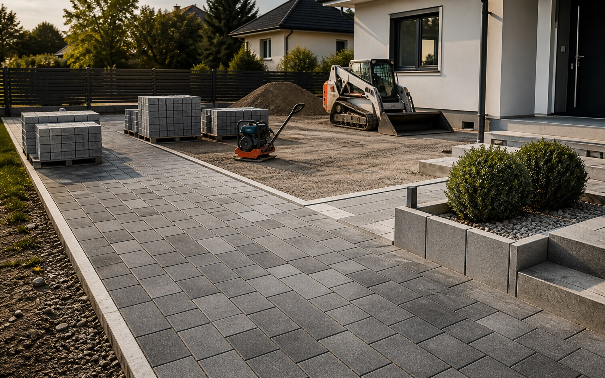
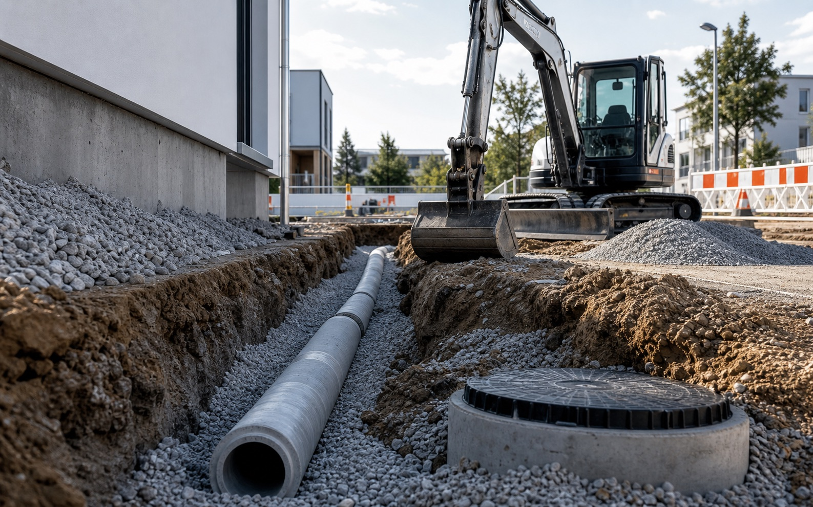
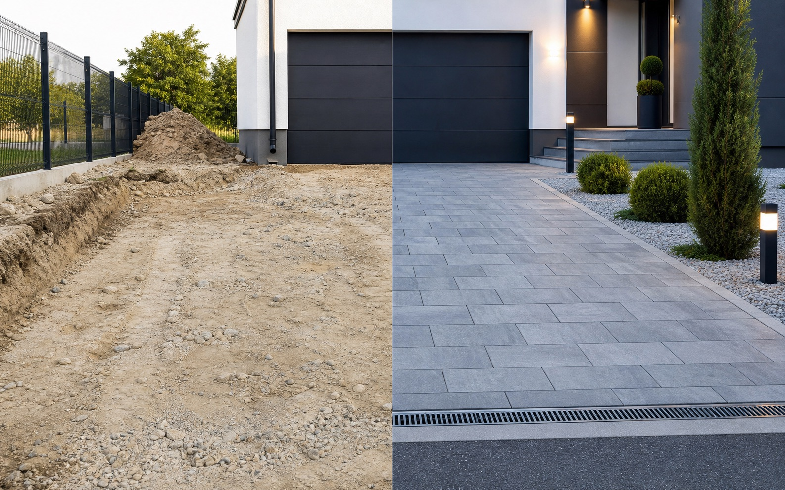

Rückbau
Selektiver Rückbau eines Bestandsgebäudes
Maschineller Abbruch, Sortierung und Übergabe der Fläche für den Neubau.
- Leistung
- Abbruch
- Dauer
- 5 Tage
Referenzen
Platzhalter-Projektbilder für Rückbau, Tiefbau und Außenanlagen. Später können hier echte Kundenprojekte mit Ort, Zeitraum und Leistungsumfang ergänzt werden.

Projektfilter
Die Reiter machen große Projektlisten später schnell erfassbar. Aktuell sind die Bilder hochwertige Platzhalter für die finalen Baustellenfotos.

Maschineller Abbruch, Sortierung und Übergabe der Fläche für den Neubau.

Aushub, Rohrbettung, Anschlussvorbereitung und fachgerechte Verdichtung.
Unterbau, Entwässerungsrinne, Pflasterfläche und saubere Kantenführung.

Planum, Tragschicht, Pflasterung und optische Aufwertung des Eingangsbereichs.
Rückbau nichttragender Bauteile, Materialtrennung und besenreine Übergabe.
Präziser Aushub, Schottereinbau und Vorbereitung für Folgegewerke.
Leistungen
Jeder Bereich öffnet eine eigene Informationsseite mit passenden Beispielbildern, typischen Abläufen und klaren Leistungsinhalten.
Leistungen werden geladen.
Vorher / Nachher
Der Vergleichsbereich kann später echte Fotos aus demselben Blickwinkel aufnehmen. Für jetzt zeigt er, wie stark ein Projekt visuell dokumentiert werden kann.
Ähnliches Projekt anfragen